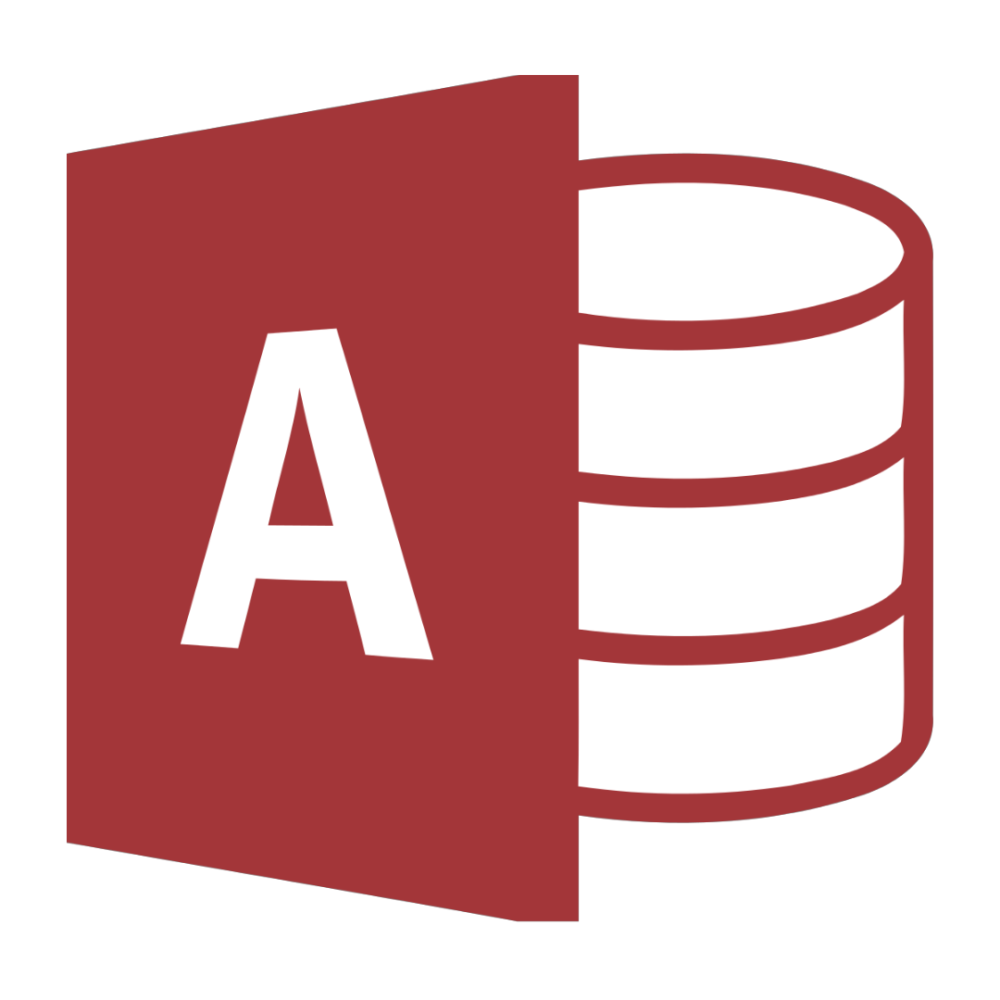

Choose your Database!


Microsoft SQL Server adalah sebuah sistem manajemen basis data relasional atau biasa disebut Relational Database Management System(RDBMS) yang dikembangkan oleh Microsoft. Penerapan Microsoft SQL Server cukup luas, alias bisa dimana saja baik dari laptop maupun ke jaringan server cloud, dan lain sebagainya.
Next ▶
a. Dapat bekerja di semua versi OS Windows
b. Memiliki fitur recovery dan restore data
c. Terseda fasilitas backup database
a. Hanya bisa beroperasi di OS Windows saja
b. Harga beli software yang lumayan tinggi
c. Kurang mampu menangani database berskala besar
Microsoft Access Database adalah sebuah program aplikasi basis data komputer relasional yang ditujukan untuk kalangan rumahan dan perusahaan kecil dan menengah. Aplikasi ini merupakan anggota dari beberapa aplikasi Microsoft Office, selain Ms.Word, Ms.Excel, dan Ms.PowerPoint.
Next ▶
Microsoft Access Database adalah alat yang mudah digunakan untuk aplikasi bisnis, baik menggunakan template maupun membuat dari awal. Ms.Access Database dapat membantu user dalam membuat aplikasi yang menarik dan berfungsi dengan baik dalam waktu yang singkat dengan alat desain yang beragam dan intuitif.
◀ Prev Next ▶
a. Kemudahan dalam pengoperasian aplikasi
b. Mudah dalam menyusun relasi dan Query(SQL) table
c. Terintegrasi dengan bahasa pemrogaman Visual Basic(6.0)
d. Mampu menampung basis data dengan jumlah cukup besar
a. Aplikasi tidak free/proprietary
b. Tidak mendukung multi threaded
c. Pemrosesan data tidak secepat web-based database
d. Arsitektur keamanan yang masih kurang baik